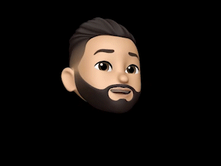
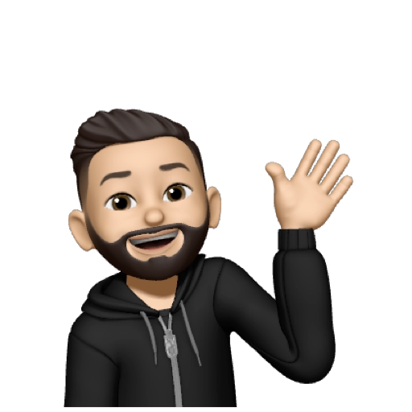

<div class="container about-me">
  <div class="row">
    <div class="col-md-12">
      <div class="main-heading">Hello there<span class="tiny-text space">general</span> <span class="tiny-text">kenobi</span> <span class="tiny-dots space">.....</span></div>
    </div>
    <div class="col-md-5 d-flex align-self-center">
      
<!--      -->

    </div>
    <div class="col-md-7">
      <div class="about-me-content">
        <p>
          Moegamat Deen Ludski is a Digital designer with a National Diploma in ICT Multimedia design from
          CPUT. After graduating high school, he sought out in the world searching for understanding of what
          this corporate world meant, and in the deep corners of offices everywhere, hidden under their
          hoodies laid his destiny. One faithful day, in a sequential stage of his life, he uncovered what he was
          meant to be. His vision suddenly changed into CMYK and RGB, his hands steady as to not to move
          one pixel to destroy his design. Qualified to bend the mind, he screams at by-passers to stop and
          stare so that he could enchant their eyes!
        </p><br>
        <p>
          Yeah, I am a super nerd. I love camping and board games with my family. But when it comes to work,
          I’m not afraid to throw away nerves, take all critiques and use it to my advantage. I design with
          passion, grit, grace and a boat load of awesomeness. Being the office fun guy, I can easily reach into
          the mind and pull out what you were thinking. “Make the logo bigger” You got it! “Make it pop” I got
          POP in spades, “Make it disappear” abra cadabra. Basically anything you throw, you know I can
          catch.
        </p> <br>
        <p>
          So get to throwing, my contact info is <a href="contact">right here!</a>
        </p>
      </div>
    </div>
  </div>
</div>
